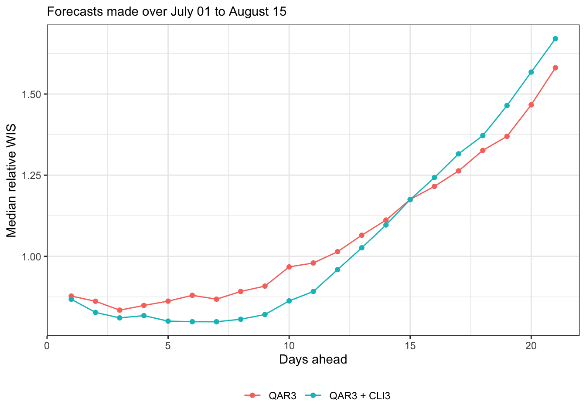
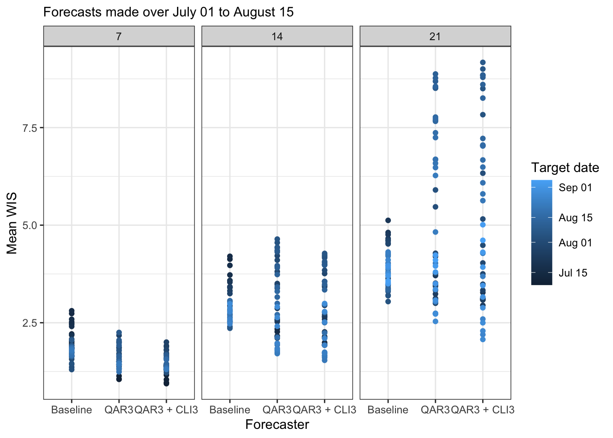

4. Produce and evaluate quantile forecasts of a COVIDcast signal
Source:vignettes/quantgen-forecast.Rmd
quantgen-forecast.RmdNote that I’m using covidcast from the r/0.4.0-release branch, and evalcast from the evalcast-killcards branch.
Also, the code chunk below took a while to run, so I ran it separately and saved the results in a file that you can find in the modeltools/vignettes/ sub-folder.
library(covidcast)
library(evalcast)
library(modeltools)
library(dplyr)
## Setup
# What are we forecasting?
response_source <- "jhu-csse"
response_signal <- "confirmed_7dav_incidence_prop"
incidence_period <- "day"
ahead <- 1:21
geo_type <- "state"
forecast_dates <- seq(as.Date("2020-07-01"), as.Date("2020-08-15"), by = "day")
# Some quantgen parameters
n <- 21 # Training set size (in days)
lags <- c(0, 7, 14) # Lags (in days) for features
lp_solver <- "gurobi"
sort <- TRUE
nonneg <- TRUE
# Important: functions to considerably speed up data fetching steps. Only pull
# recent data for each forecast date, depending on the training set size (and
# other parameters for quantgen)
# Due to inevitable latency in the signals, if we look at training sets defined
# by taking all n days before the forecast date, then we don't actually have n
# time points worth of data available to us (we're always fetching data "as of"
# the forecast date). As here n = max(ahead) = 28, the baseline forecaster can't
# actually produce 28-days-ahead forecasts with the most recent n time points
# worth of data, since it would need to calculate differences of signal values
# spaced 28 days apart. This is why we've included an extra 4 days in the data
# we make available to the baseline forecaster
start_day_baseline <- function(forecast_date) {
return(as.Date(forecast_date) - n - 4 + 1)
}
# For the autoregressive models fit by quantgen, we need to ensure that we pull
# enough training data so that 1. we actually have the response (defined by some
# number of days ahead into the future) and 2. we have the lagged features
start_day_quantgen <- function(forecast_date) {
return(as.Date(forecast_date) - max(ahead) - n - max(lags) + 1)
}
## Produce forecasts
# Produce forecasts using a baseline forecaster
pred_baseline <- get_predictions(
forecaster = baseline_forecaster,
name_of_forecaster = "Baseline",
signals = tibble::tibble(
data_source = response_source,
signal = response_signal,
start_day = list(start_day_baseline)),
forecast_dates = forecast_dates,
incidence_period = incidence_period,
ahead = ahead, geo_type = geo_type,
signal_aggregation = "long")
# Quantile autoregression with 3 lags, or QAR3
pred_quantgen1 <- get_predictions(
forecaster = quantgen_forecaster,
name_of_forecaster = "QAR3",
signals = tibble::tibble(
data_source = response_source,
signal = response_signal,
start_day = list(start_day_quantgen)),
forecast_dates = forecast_dates,
incidence_period = incidence_period,
ahead = ahead, geo_type = geo_type,
signal_aggregation = "list",
n = n, lags = lags, lambda = 0, # Just do quantile regression
lp_solver = lp_solver, sort = sort, nonneg = nonneg)
# Quantile autoregression with 3 lags, plus 3 lags of the CLI-in-community
# signal from Delphi's symptom survey, or QAR3 + CLI3
pred_quantgen2 <- get_predictions(
forecaster = quantgen_forecaster,
name_of_forecaster = "QAR3 + CLI3",
signals = tibble::tibble(
data_source = c(response_source, "fb-survey"),
signal = c(response_signal, "smoothed_hh_cmnty_cli"),
start_day = list(start_day_quantgen)),
forecast_dates = forecast_dates,
incidence_period = incidence_period,
ahead = ahead, geo_type = geo_type,
signal_aggregation = "list",
n = n, lags = lags, lambda = 0, # Just do quantile regression
lp_solver = lp_solver, sort = sort, nonneg = nonneg)
## Evaluate forecasts
# Now "evaluate" all of these predictions. In quotes because we pass a fake
# evaluation function so we can do it ourselves later. This is because I'd
# rather see results compressed down to have one row per forecast task (not one
# row per forecasted quantile value) and it's easier to use dplyr::summarize()
results <- evaluate_predictions(
predictions_cards = rbind(pred_baseline, pred_quantgen1, pred_quantgen2),
err_measures = list(temp = function(quantile, value, actual) NA)) %>%
select(geo_value, ahead, quantile, forecaster, forecast_date, target_end_date,
value, actual)
# Overwrite evalcast::absolute_error() and evalcast::weighted_interval_score(),
# because I was having some problems with them, see issues #392 and #393 on the
# cmu-delphi/covidcast repo. (This might have been fixed now but I'm still just
# leaving these function definitions in place to be safe)
absolute_error <- function(tau, value, actual) {
return(abs(actual - value)[tau == 0.5])
}
weighted_interval_score <- function(tau, value, actual) {
return((absolute_error(tau, value, actual) / 2 +
sum(pmax(tau * (actual - value),
(tau - 1) * (actual - value), na.rm = TRUE))) /
(length(tau) + 1) * 2)
}
# Do the evaluations ourselves
evals <- results %>%
filter(!is.na(quantile)) %>% # NAs are problematic for simple my functions
group_by(geo_value, ahead, forecaster, forecast_date, target_end_date) %>%
summarize(ae = absolute_error(quantile, value, actual),
wis = weighted_interval_score(quantile, value, actual)) %>%
ungroup()
# Save everything to file
save(list = ls(), file = "quantgen-forecast.rda", compress = "xz")Load the data and take a peek at the evals tibble
##
## Attaching package: 'dplyr'## The following objects are masked from 'package:stats':
##
## filter, lag## The following objects are masked from 'package:base':
##
## intersect, setdiff, setequal, union
library(knitr)
load("quantgen-forecast.rda")
evals %>%
head(5) %>%
kable("html", digits = 3, caption = "")| geo_value | ahead | forecaster | forecast_date | target_end_date | ae | wis |
|---|---|---|---|---|---|---|
| ak | 1 | Baseline | 2020-07-01 | 2020-07-02 | 2.185 | 2.061 |
| ak | 1 | Baseline | 2020-07-02 | 2020-07-03 | 2.114 | 1.969 |
| ak | 1 | Baseline | 2020-07-03 | 2020-07-04 | 2.491 | 2.346 |
| ak | 1 | Baseline | 2020-07-04 | 2020-07-05 | 2.218 | 2.068 |
| ak | 1 | Baseline | 2020-07-05 | 2020-07-06 | 1.769 | 1.597 |
Some convenient functions for analysis and plotting
library(dplyr)
library(tidyr)
library(purrr)
library(ggplot2)
theme_set(theme_bw())
# Scale error measures, which are columns of df as indicated by vars, based on
# those of a particular forecaster, given by denom_forecaster; and the argument
# err_cols identifies which columns of the data frame contain the error metrics
# (important for pivoting purposes; err_cols can actually be a strict superset
# of the error columns, that won't be a problem)
scale_by_forecaster <- function(df, vars, denom_forecaster,
err_cols = c("ae", "wis")) {
df_list <- map(vars, function(var){
df %>%
select(setdiff(names(df), setdiff(err_cols, var))) %>%
pivot_wider(names_from = "forecaster",
names_prefix = var,
values_from = var) %>%
mutate(across(starts_with(var), ~ .x /
!!sym(paste0(var, denom_forecaster)))) %>%
pivot_longer(cols = starts_with(var),
names_to = "forecaster",
values_to = var) %>%
mutate(forecaster = substring(forecaster, nchar(var) + 1)) %>%
filter(forecaster != denom_forecaster)
})
return(reduce(df_list, left_join))
}
# Helpful wrapper on interaction() for our canonical plotting function
Interaction <- function(...){
params <- list(...)
if ( length(params) == 0 ) return(NULL)
else if ( length(params) == 1 ) return(params[[1]])
else return(interaction(...))
}
# Produce a "canonical" plot, based on two columns in df specified by x and y.
# The aggr argument gives the aggregation function used; dots and lines just
# control what appears on the plot; group_vars gives the variables to group by
# pre-aggregation (in addition to x); facet_rows gives variables for faceting on
# rows, and likewise for facet_cols; denom_forecaster what forecaster to use for
# a relative metric; scale_before_aggr is a Boolean flag indicating the order of
# operations; all arguments after that are label/legend parameters
canonical_plot <- function(df, x, y, aggr = mean, dots = TRUE, lines = TRUE,
group_vars = "forecaster", facet_rows = NULL,
facet_cols = NULL, denom_forecaster = NULL,
scale_before_aggr = FALSE,
title = waiver(), subtitle = waiver(),
xlab = waiver(), ylab = waiver(),
legend_position = "bottom", legend_title = NULL){
# Scale before aggregation, if we need to
if ( !is.null(denom_forecaster) && scale_before_aggr ){
df <- scale_by_forecaster(df, y, denom_forecaster)
}
# Aggregate
df <- df %>%
group_by(!!!syms(group_vars), !!sym(x)) %>%
drop_na() %>%
summarize(!!y := aggr(!!sym(y)), .groups = "drop")
# Scale after aggregation, if necessary
if ( !is.null(denom_forecaster) && !scale_before_aggr ){
df <- scale_by_forecaster(df, y, denom_forecaster)
}
# Set up plotting layers
dots_layer <- NULL
line_layer <- NULL
color_vars <- setdiff(group_vars, c(facet_rows, facet_cols))
df <- df %>% mutate(color = Interaction(!!!syms(color_vars)))
if ( dots ) dots_layer <- geom_point(aes(color = color, group = color))
if ( lines ) line_layer <- geom_line(aes(color = color, group = color))
facet_layer <- facet_grid(rows = vars(!!!syms(facet_rows)),
cols = vars(!!!syms(facet_cols)))
label_layer <- labs(title = title, subtitle = subtitle,
x = xlab, y = ylab, color = legend_title)
theme_layer <- theme(legend.pos = legend_position)
# Plot and return
ggplot(df, aes(x = !!sym(x), y = !!sym(y))) +
line_layer + dots_layer + facet_layer + label_layer + theme_layer
}Try it out, mean AE and mean WIS
subtitle <- sprintf("Forecasts made over %s to %s",
format(min(forecast_dates), "%B %d"),
format(max(forecast_dates), "%B %d"))
canonical_plot(evals, x = "ahead", y = "ae", aggr = mean,
subtitle = subtitle, xlab = "Days ahead", ylab = "Mean AE")
canonical_plot(evals, x = "ahead", y = "wis", aggr = mean,
subtitle = subtitle, xlab = "Days ahead", ylab = "Mean WIS") 
Let’s just focus on WIS from here on, since AE behaves qualitatively similarly. Here’s relative mean WIS (relative to baseline)
canonical_plot(evals, x = "ahead", y = "wis", aggr = mean,
denom_forecaster = "Baseline", subtitle = subtitle,
xlab = "Days ahead", ylab = "Relative mean WIS")
Median relative WIS (still relative to baseline; note the reversal in the order of operations, and median for robustness)
canonical_plot(evals, x = "ahead", y = "wis", aggr = median,
denom = "Baseline", scale_before = TRUE, sub = subtitle,
xlab = "Days ahead", ylab = "Median relative WIS")Now produce some plots of forecast scores time, i.e. by target end date
canonical_plot(evals, x = "target_end_date", y = "wis", aggr = mean,
dots = FALSE, group_vars = "forecaster", sub = subtitle,
xlab = "Target date", ylab = "Mean WIS")
canonical_plot(evals %>% filter(ahead %in% (1:3 * 7)),
x = "target_end_date", y = "wis", aggr = mean,
dots = FALSE, group_vars = c("forecaster", "ahead"),
facet_rows = "ahead", sub = subtitle,
xlab = "Target date", ylab = "Mean WIS")
canonical_plot(evals, x = "target_end_date", y = "wis", aggr = mean,
dots = FALSE, group_vars = c("forecaster", "ahead"),
facet_rows = "forecaster", sub = subtitle,
xlab = "Target date", ylab = "Mean WIS",
legend_pos = "right", legend_title = "Ahead")
Now of a plot forecast scores broken down by target end date and ahead
canonical_plot(evals %>% filter(ahead %in% (1:3 * 7)),
x = "forecaster", y = "wis", aggr = mean, lines = FALSE,
group_vars = c("target_end_date", "ahead"), facet_cols = "ahead",
sub = subtitle, xlab = "Forecaster", ylab = "Mean WIS",
legend_position = "right", legend_title = "Target date")